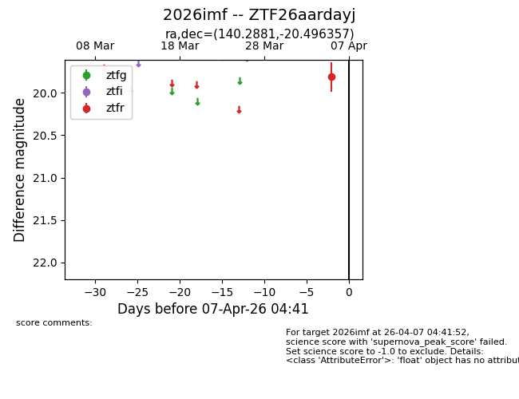
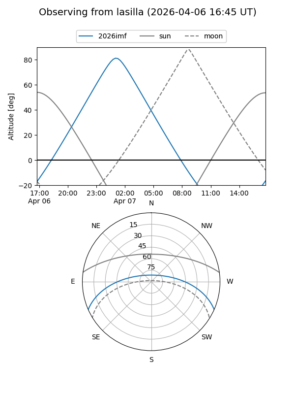
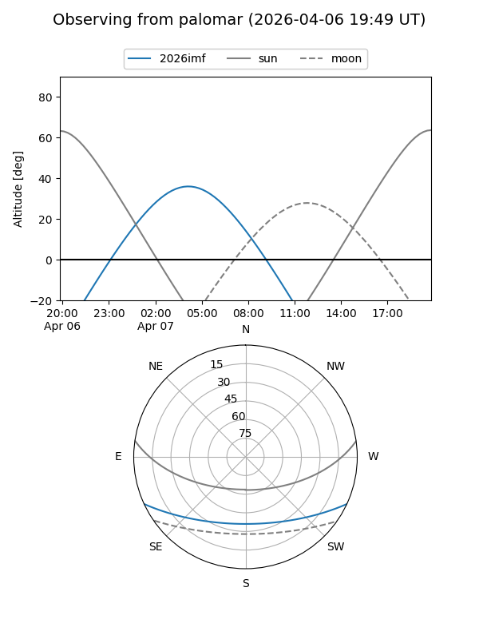
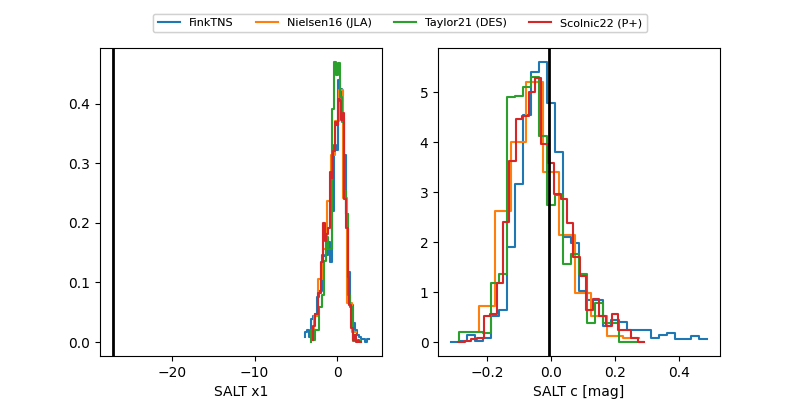

2026imf
Target 2026imf at 2026-04-07 04:46
Aliases and brokers:
FINK: link
Lasair: link
ALeRCE: link
TNS: link
YSE: link
alt names
ZTF26aardayj (ztf,fink_ztf)
2026imf (tns,yse)
Coordinates:
equatorial (ra, dec) = 140.2881,-20.49636
equatorial (HMS+DMS) = 09:21:09.14,-20:29:46.89
galactic (l, b) = (250.4537,+20.30427)
Flags:
Photometry:
last ztfr=19.81
1 ztfr detections
Lightcurve

Visibility


Additional plots
